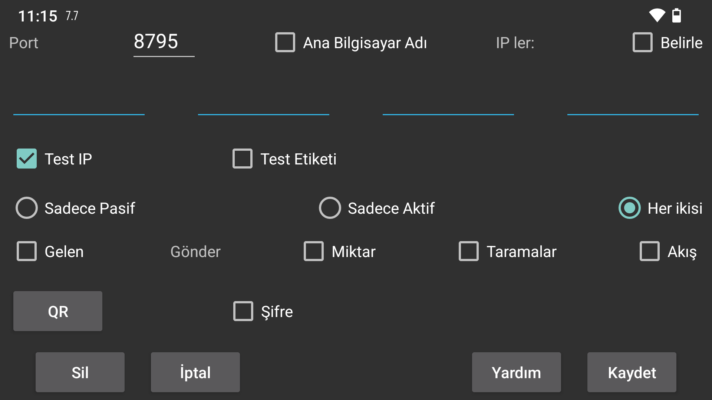

Baska bir Juggluco örnegiyle bir baglanti belirtin. Bir cihazdaki Juggluco, IP/TCP araciligiyla baska bir cihazdaki Juggluco'ya veri gönderir. Bir baglanti kurmak için, Juggluco'lardan birinin portu dinlemesi ve digerinin o portla iletisim kurmasi gerekir. Bu Juggluco örneginin dinledigi port, önceki ekranda verilmistir. (Sol orta menü->Mir ror). Burada, Juggluco örneginin aktif olarak iletisim kurmasi durumunda hangi portla iletisim kuracagini belirtirsiniz. Bu Juggluco örnegi bir portu dinleyemiyorsa, "Yalnizca aktif"i seçin. Diger taraf bir portu dinleyemiyorsa, "Yalnizca Pasif" seçenegini seçin, aksi takdirde "Her Ikisi" seçenegini isaretli birakin. Diger taraftaki Juggluco, burada Yalnizca Pasif seçenegini seçerseniz Yalnizca Aktif ve burada Yalnizca Pasif seçenegini seçerseniz Yalnizca Aktif seçenegini belirtir ve burada Her Ikisi seçenegini seçerseniz Her Ikisi seçenegini belirtir.
Eger bu Juggluco örnegi aktif olarak iletisim kurarsa, iletisim kurmasi gereken IP(leri) belirtmelisiniz. Eger bu ana bilgisayarin birden fazla IP'si varsa, birden fazla belirtmelisiniz; örnegin iki cihaz bazen bir ev agi üzerinden ve bazen de dogrudan tasinabilir erisim noktasi olarak baglandiginda.
UYARI: Asla birden fazla cihazin IP'sini belirtmeyin, bu durumda her biri sadece verinin bir kismini alacaktir.
hostname: IP'ler yerine bir ana bilgisayar adi belirtin. Bu, baglantiyi bir ad sunucusuna bagimli hale getirir, dolayisiyla daha yavas ve ad sunucusu baglantisinin kesintiye ugramasindan etkilenir. Bu yalnizca statik bir IP yapilandiramadiginizda ve ana bilgisayar adi otomatik olarak dinamik IP'ye atandiginda açilmalidir.
'Yalnizca Etkin' haricindeki tüm durumlarda 'Algila' seçenegini seçebilirsiniz; bu durumda Juggluco, Juggluco ile iletisime geçen ilk IP'yi diger tarafin IP'si olarak kaydeder. Dogru cihazin temas kurup kurmadigini dogrulamak iki sekilde yapilabilir: IP'yi test etmek için 'IP Testi'ni seçin. Etiket Testi'ni seçerseniz, sadece her iki taraf da ayni etiketi belirtmisse bir temas kurulur.
Bu uygulamanin klon (ayna) uygulamasi olarak çalismasini istiyorsaniz 'den al'i seçin.
Bu cihazin gönderici olmasini istiyorsaniz, hangi verilerin gönderilecegini belirtmeniz gerekir.
Miktarlar: Belirttiginiz doz, besin ve spor verileriniz.
Taramalar: Sensör taranarak alinan veriler (Libre 2'de taramalar ve geçmis, ve Libre 3'te yalnizca Bluetooth araciligiyla sensöre erismek için gereken veriler).
Akis: Bluetooth tarafindan alinan veri. Libre3 için buna geçmis verilerde dahildir.
Bazen bazi veriler alici cihazda zaten mevcuttur. Bu verilerin ne zamana kadar mevcut olacagini belirtebilirsiniz:
Basla: veri yok
Simdi: tüm veriler mevcut
Veya ekranin baslangiç pozisyonuna göre belirlenen bir tarih.
Bir veri kaynagi mevcut bir baglantiya eklendiginde, baslangiç tarihi yalnizca eklenen veri kaynagini belirler. Örnegin, Taramalar ve Akislar zaten ana bilgisayara önceden gönderildiyse ve Miktarlar yeni eklendiyse, baslangiç tarihi yalnizca gönderilen Miktarlari belirler.
Iki cihaz güvenli olmayan bir baglanti üzerinden baglandiginda, baglantinin her iki tarafinda ayni (en fazla) 16 karakterli sifre belirtilerek veriler imzalanabilir ve sifrelenebilir. Belirttiklerinizi kaydetmek için Kaydet'i seçin. Sil bu baglanti belirtimini silecektir.
En basit durumda, tüm baglantilar ev aginiza aittir, bu nedenle yerel IP'leri kullanabilirsiniz. Ayrica Wi-Fi üzerinden internete baglanabilirsiniz, bu durumda harici bir portu ev aginizdaki bir IP ve porta nasil yönlendireceginiz konusunda modem kilavuzunuza basvurmalisiniz.
Internet üzerinden mobil veri baglantisiyla baglanan iki akilli telefon, eger bunlardan biri ag baglanti noktasinda dinleme yapabiliyorsa, dogrudan birbirleriyle baglanti kurabilir. Ikisi de yapamazsa (örnegin hiçbiri bireysel IP'ye sahip degilse), yine de üçüncü bir cihaz araciligiyla birbirleriyle iletisim kurabilirler. Bir olasilik Juggluco'yu evde bir modem araciligiyla internete bagli bir Android cihazda (en az Android 4.4) çalistirmaktir. Baska bir olasilik da Juggluco'ya ait bir komut satiri programini bir bilgisayarda (örnegin PC'niz veya Amazon AWS) çalistirmaktir: https://www. juggluco.nl/Juggluco/cmdline/index.html
Port yönlendirme egitimleri:
https://portforward .com/how-to-port-forward/
https://stevessmarthomeguide.com/understanding-port-forwarding/
NFC olmayan bir cihazda Bluetooth araciligiyla glikoz degerlerini almak mümkündür (bakiniz https://www.juggluco.nl/ Juggluco/mirror): Sensörü NFC cihazinda NFC üzerinden baslatin ve ardindan Tarama ve Akis verilerini NFC olmayan cihaza gönderin. Bundan sonra Akis verileri için baglantiyi tersine çevirin ve NFC cihazindaki Bluetooth baglantisini kapatin ve NFC olmayan cihazda açin ve ayrica NFC cihazindaki "Bluetooth üzerinden sensör"ü kapatin ve NFC olmayan cihazda açin. Böylece bir cihazla tarama yapabilir ve baska bir cihazda Bluetooth üzerinden glikoz degerlerini alabilirsiniz. Ancak tüm cihazlarda tüm sensör verileri mevcut olmalidir. Cihazlar veri alisverisinde bulunursa, her zaman hem tarama hem de akis verilerini almalidirlar. Bu nedenle Akis verilerini her zaman NFC cihazina ve tarama verilerini NFC olmayan cihaza geri göndermelisiniz. Aksi takdirde veriler senkronizasyondan çikacak ve eski kimlik dogrulama verileri kullanilacak veya yeni veriler eski verilerin üzerine yazilacaktir.
Miktarlar verisi tamamen bagimsizdir.
Baglantinin her iki tarafinda da kesin bir tamamlayici sartname gereklidir. Basit bir ihmal, veri iletimini imkansiz hale getirebilir.
Baglantinin askida kalmasi ve WIFI'yi açip kapatarak veya Sync'e basarak sifirlanmasi gerekebilir. Ayrica, activeonly-passiveonly baglantisini her ikisine veya tam tersine çevirmek fark yaratabilir.
Baglanti degisikligiyle birlikte IP degisikligini de göz önünde bulundurmalisiniz. Örnegin; ev aginda, tasinabilir bir erisim noktasindan farkli IP'ler kullanilmalidir.